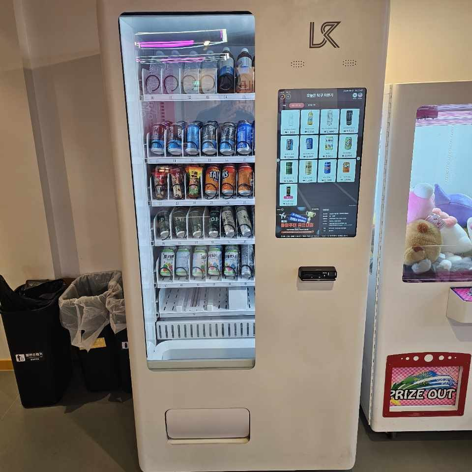

종로구 무인자판기 설치
코인노래연습장 냉장·스낵 겸용 자판기

코인노래연습장은 손님이 들어가기 직전에 지갑을 한 번 더 여는 업종입니다. 방에 들어가면 한 시간 가까이 나오지 않고, 노래를 부르는 동안 목이 마르는 것은 거의 정해진 일이기 때문입니다. 그래서 이 업종의 자판기는 "있으면 좋은 것"이 아니라 접수대 옆에 당연히 있어야 하는 설비에 가깝습니다.
이번 종로구 현장도 사장님의 고민이 거기서 출발했습니다. 손님이 음료를 사러 건물 밖 편의점까지 내려갔다 오면서 이용 시간이 애매하게 끊긴다는 것이었습니다. 매장은 저녁부터 새벽까지가 주 영업 시간이고, 늦은 시간에는 직원 없이 무인으로 돌아가는 구조였습니다.
종로구 코인노래연습장에 맞춘 구성
자리는 방이 늘어선 복도가 아니라 입구 쪽 대기 공간 벽면으로 잡았습니다. 복도는 폭이 좁아 기계를 세우면 문 여닫는 동선과 겹치고, 무엇보다 방 안에서 새어 나오는 소리 때문에 화면 안내음이 묻힙니다. 반대로 대기 공간은 순서를 기다리며 서 있는 시간이 있어, 그 몇 분 사이에 구매가 일어납니다.
기종은 냉장칸과 상온 스낵칸을 한 대에 담은 겸용형으로 넣었습니다. 음료만 파는 기계보다 매장 성격에 맞았기 때문입니다. 위 두 층은 생수와 이온음료, 가운데는 탄산과 캔커피, 아래쪽은 목에 부담이 덜한 꿀물·차 종류와 가벼운 과자로 채웠습니다. 목을 쓰는 손님이 많은 곳이라 차가운 탄산만 깔아 두면 오히려 회전이 한쪽으로 쏠립니다. 결제는 카드와 간편결제만 열었고 현금함은 쓰지 않았습니다.
- 기종 — 냉장 + 상온 스낵 겸용 스마트 자판기 1대, 세로 화면형
- 품목 — 생수·이온음료 / 탄산·캔커피 / 꿀물·차 / 가벼운 스낵류
- 자리 — 복도 아닌 입구 대기 공간 벽면, 접수 키오스크와 같은 줄
- 결제·관리 — 카드·간편결제 전용, 현금함 없음, 재고·매출 원격 확인
설치 후 나아진 점, 그리고 아쉬웠던 점
먼저 좋아진 쪽입니다. 손님이 건물 밖으로 내려가는 일이 거의 없어졌습니다. 접수 키오스크에서 시간을 찍고 바로 옆에서 음료를 집어 들어가는 흐름이 만들어졌습니다. 새벽 시간대에도 사장님이 나와 있을 필요 없이 남은 수량을 휴대전화로 확인할 수 있다는 점이 특히 도움이 됐다고 하셨습니다.
아쉬웠던 점도 그대로 적습니다. 첫째, 노래방은 소음이 큰 공간입니다. 결제 완료음이나 안내음이 잘 안 들려서, 화면 밝기를 높이고 안내 문구를 눈에 띄게 바꿔 보완했습니다. 둘째, 심야에 쓰레기가 모입니다. 자판기 옆에 분리수거함을 같이 두지 않으면 빈 캔이 접수대 위나 방 안에 그대로 남습니다. 셋째, 처음 두 주는 품목 비중을 잘못 잡아 생수가 먼저 비고 탄산이 남았습니다. 원격으로 판매 기록을 보고 층 구성을 한 번 바꿨습니다. 처음부터 맞출 수는 없고, 조정하는 과정이 필요합니다.
종로구, 이런 자리가 잘 맞습니다
종로구는 업무지구와 유흥·문화 상권, 오래된 주거지가 한 구 안에 겹쳐 있는 동네입니다. 종로1·2·3·4가 일대는 심야까지 사람이 남아 있는 번화가라 노래연습장·PC방 같은 24시 업종이 밀집해 있고, 혜화동과 이화동은 대학로 공연 상권이라 저녁 이후 유동 인구가 몰립니다. 창신동과 숭인동은 주택과 소규모 공장·상가가 섞여 있어 낮 시간대 수요가 꾸준하고, 평창동·부암동은 주거 위주, 사직동·청운효자동 쪽은 관공서와 사무실이 많은 구역입니다.
무인 여가 업종으로 보면 심야 영업을 하는 역세권 건물 안 매장이 가장 잘 맞습니다. 사람이 지키지 않는 시간에도 그대로 팔리기 때문입니다. 대기 공간이 좁은 매장이라면 이번처럼 접수 키오스크와 한 줄로 맞춰 세우는 방법이 공간을 덜 먹습니다.
종로구 서비스 지역
청운효자동 · 사직동 · 삼청동 · 부암동 · 평창동 · 무악동 · 교남동 · 가회동 · 종로1·2·3·4가동 · 종로5·6가동 · 이화동 · 혜화동 · 창신동 · 숭인동
종로구 전역에서 방문 상담이 가능합니다. 맞닿은 중구·서대문구·성북구 방면도 같은 담당자가 함께 다닙니다. 지역별 안내는 종로구 무인자판기 설치 안내 페이지에서 보실 수 있습니다.
종로구 무인자판기, 이렇게 시작하시면 됩니다
전화나 상담 신청으로 주소만 남겨 주시면 됩니다. 담당자가 나가서 놓을 자리의 벽면 길이와 천장 높이, 콘센트 위치, 손님 동선을 확인합니다. 노래연습장은 여기에 방음벽 구조와 환기 상태를 한 가지 더 봅니다. 냉장 기계는 뒤쪽으로 열을 빼기 때문에 벽에 바짝 붙이면 안 되고, 좁은 실내일수록 간격이 중요합니다. 자리가 정해지면 설치일만 잡으면 되고, 설치비는 따로 받지 않습니다. 기계는 구입·렌탈·임대 중에서 고르실 수 있습니다.
매장을 새로 꾸미는 중이라면 인테리어 도면 단계에서 벽면 한 칸과 콘센트 한 구를 미리 빼 두시기를 권해 드립니다. 공사가 끝난 뒤에 자리를 찾으면 대개 남는 곳이 화장실 앞이나 구석뿐입니다. 그 자리는 눈에 안 띄어서 같은 기계를 놓아도 결과가 다릅니다.
관련 검색어: 종로구무인자판기 · 종로3가자판기설치 · 혜화동무인자판기 · 창신동자판기 · 종로구코인노래방자판기
※ 사진은 픽프리가 시공한 설치 사례이며, 글에 적힌 지역의 현장 사진은 아닙니다.
함께 많이 찾는 키워드
종로구 무인자판기 · 종로구 자판기 설치 · 종로구 자판기 임대 · 종로구 자판기 렌탈 · 서울 무인자판기 · 서울 자판기 설치 · 종로3가 자판기 · 종각 자판기 · 혜화동 자판기 · 이화동 자판기 · 창신동 자판기 · 숭인동 자판기 · 사직동 자판기 · 평창동 자판기 · 부암동 자판기 · 삼청동 자판기 · 코인노래연습장 자판기 · 코인노래방 자판기 · 노래방 자판기 · 무인매장 자판기 · 냉장 자판기 · 스낵 자판기 · 스마트 자판기 · 카드 자판기 · 간편결제 자판기 · 무인키오스크 설치 · 자판기 설치비용 · 자판기 원격관리 · 무인창업